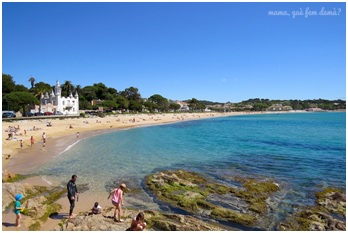
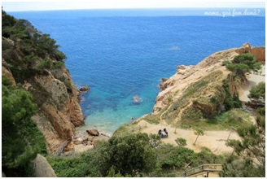
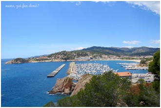
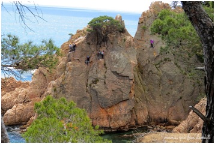
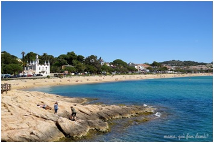
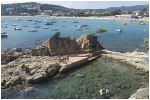
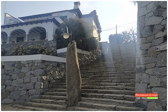
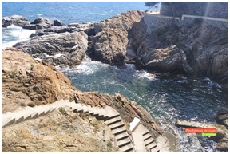
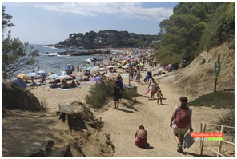

Sant Feliu de Guíxols — Camí de Ronda a Sant Pol
Alojamiento: Hotel Hostal Chic · Rambla El Portalet, 5 · 17220 Sant Feliu de Guíxols
Club Nàutic y Camí de Ronda
Punto de partida con aparcamiento gratuito y restaurantes cerca. El camino resigue la costa sin pérdida dentro del Paratge Natural de la Volta de l'Ametller. Aunque hay muchas escaleras, los escalones son anchos y no demasiado empinados. Solo hay un camino que va siguiendo la costa, pasando por varios miradores, urbanizaciones y accesos a bonitas calas.

Cala Jonca y Mirador de les Peixeteres
Las escaleras llevan hasta una zona con mesas de pícnic. Por debajo está la Cala Jonca, accesible por una escalera metálica bastante pronunciada (no es obligatorio bajar). El camino sigue subiendo hasta el Mirador de les Peixeteres, con muy buenas vistas de la bahía de Sant Feliu de Guíxols.

Vía Ferrata de la Cala del Molí
En la Cala del Molí se encuentra la única vía ferrata del mundo construida sobre el mar. La ruta continúa entre pinos, miradores y algunos tramos de raíces. Se pasa por: Cala de l'Ametller, Cala del Peix, Cala del Niu y Cala Maset, y también por un túnel con grandes ventanales sobre el mar.
Platja de Sant Pol
El final del camí. Desde el sendero ya se divisa la Torre de les Punxes (Casa Estrada), casa modernista cerrada y primer edificio residencial construido aquí. La playa tiene arena fina y poco profunda, muy valorada por las familias. En el paseo marítimo, bonitas casas modernistas —especialmente destacable la Casa Domènech-Girbau.

Banys de S'Agaró y Parc de les Dunes
Las 45 casetas de colores (Banys de S'Agaró) son el símbolo de identidad de S'Agaró: se montan en verano y se retiran en invierno, frente al restaurante La Taverna del Mar. Delante, el Parc de les Dunes con dunas protegidas, vegetación costera, parque infantil y gimnasia. Al norte, el Hostal de la Gavina, hotel de lujo frecuentado por famosos y escenario de una serie del Tricicle.

Ermita de Sant Elm
En coche. Construida en 1452, lo mejor son las vistas panorámicas: desde aquí se divisa el mar desde Tossa de Mar hasta Palamós. En 1908, el periodista Ferran Agulló, hijo de Sant Feliu, se inspiró aquí en la bravura del mar para bautizar la "Costa Brava". Acceso a pie pronunciado; ir bien calzado y en horas de poco calor.
Casino de la Constancia
Al lado del hotel. Diseñado por General Guitart con estilo historicista neoárabe y neomudéjar y llamativa coloración amarilla. Las puertas fusionan la dovela medieval catalana con el arco de herradura árabe. Conocido como "el Casino dels Nois" (persona progresista en Sant Feliu), fue espacio social con biblioteca, fórums y bailes. Hoy tiene bar-restaurante en la planta baja.
Monestir de Sant Feliu · Porta Ferrada · Arc de Sant Benet
El patrimonio por excelencia de la ciudad. Fundado en la primera mitad del siglo X sobre fundamentos romanos. La Torre del Corn hacía sonar el cuerno contra los ataques piratas; la Torre del Fum encendía una hoguera para alertar a los del campo. El Arc de Sant Benet (1747) fue repuesto en 1999 con obra de Domènec Fita tras desaparecer en la Guerra Civil.
Rambla Vidal y Plaça del Mercat
La Rambla Vidal albergó los astilleros medievales (siglo XIV) donde se construían barcos, carabelas y balleneros. La Plaça del Mercat —con el Ayuntamiento, el mercado cubierto novecentista de 1929 y la fuente de 1859— es el corazón social desde el siglo XIII. El rey Jaime II (1323) otorgó el derecho a mercado semanal, que sigue celebrándose hoy. El mejor día: el domingo.
Restaurant María Rosa
Paella buenísima. Justo en la Platja de Sant Pol, el lugar perfecto para reponer fuerzas tras el camí de ronda. restaurantmariarosa.es
Camí de Ronda: Platja d'Aro → S'Agaró
Camino ancho, bien asfaltado y con poco desnivel. Circular, se puede recorrer en ambos sentidos. Señalizado con paneles que detallan la historia del lugar.
Punta d'En Pau y la Caleta del Racó de Llevant
El camino arranca con una bajada suave por la calle Josep Ensesa. Tras unos muros se llega a L'Esquerda dels Llobarros ("Grietas de las lubinas"), zona rocosa con bañistas solitarios entre las piedras. La rocosa Punta d'En Pau es el último punto antes de que el camino se adentre hacia Sant Pol; después del viento del camino, la cala es un remanso. Antes de llegar: la Caleta del Racó de Llevant, solarium de hormigón buscado por los que huyen de masificaciones.

Cala Pedrosa y la Logglia de Senyora Blanca
En Cala Pedrosa hay algo de arena, un menhir de granito de 3 metros de alto fechado entre los siglos IV y III a.C. y elegantes casas de principios del siglo XX. Destaca la Logglia de Senyora Blanca, propiedad original del industrial Josep Ensesa i Gubert. Fue él quien construyó el Hostal La Gavina, primer hotel de España miembro de Leading Hotels of the World, regentado por la cuarta generación de la familia. Entre sus huéspedes ilustres: Ava Gardner, Orson Welles, Dalí, Sean Connery, Jack Nicholson y Robert De Niro.

Cala Vaques y el Mirador de los Esculls de la Font
Una de las mejores zonas para fotografiar: la impresionante escalera que desciende desde el camino hasta un pequeño puerto natural entre las rocas. Tras las escaleras, el punto más instagrameable: el mirador en forma de templete con ocho columnas en la plaza del Mirador, donde el camino de ronda se convierte en una elegante plaza. Hay una fuente para sofocar el calor.

Cala Sa Conca en Platja d'Aro
La cala que marca el final del camino. Con baños, duchas y chiringuito a pie de playa, reconocida con Bandera Azul. El islote de Sa Conca divide la playa en dos: la Cala Sa Conca y la Cala dels Oriços (s'Oriçar), donde es fácil encontrar erizos de mar. El camino concluye en el Port d'Aro, a la altura del restaurante El Xiri del Port.

Port d'Aro — Final del camino
El camino de ronda concluye aquí, en el puerto deportivo de Port d'Aro, a la altura del restaurante El Xiri del Port. Desde aquí, vuelta a Platja d'Aro para cerrar el circuito o parada directa en el restaurante Voramar para reponer fuerzas.

Voramar
Restaurante al final del camino de ronda, en el Port d'Aro. La parada perfecta para cerrar el segundo día de ruta costera.